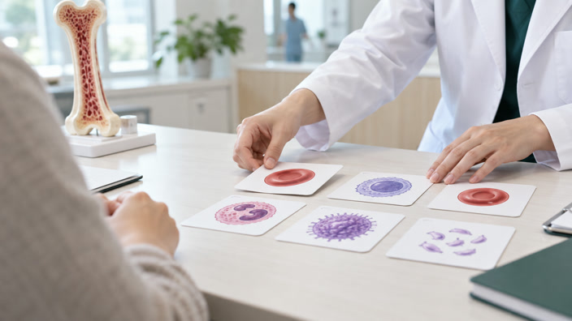

본문 바로가기
의료원
한울본원
한울서울병원
한울여성암병원
한울비뇨기병원
한울뇌혈관병원
한울심장혈관병원
한울아동병원
외래진료 예약
건강검진 예약
한울혈액암병원
로그인
회원가입
언어 선택
Korean
English
中文
센터 / 의료진
센터 소개
CAR-T/세포치료센터
골수종센터
림프종센터
백혈병센터
소아혈액종양센터
이식지원센터
혈액암가족돌봄센터
클리닉 소개
빈혈클리닉
혈전지혈클리닉
골수부전클리닉
골수증식종양클리닉
혈액건강연구소
의료진 검색
진료시간표
예약 / 발급
온라인 진료예약
예약확인
신청/발급 안내
이용안내
진료안내
예약안내
진료절차안내
입원 / 퇴원안내
고객서비스
고맙습니다
자주 묻는 질문
안내전화
건강정보
혈액암정보
혈액질환
세포치료
건강TV
자주 묻는 질문
병원소개
한울혈액암병원 소개
병원장 인사말
병원소식
공지사항
언론보도
병원안내
오시는 길
주차안내
편의시설
홈
건강정보
건강TV
혈액건강 TV
검색어
혈액암 환자의 치료
2026.07.31
혈액암 환자의 재활 치료
2026.07.31
혈액암 환자를 위한 의료사회복지정보
2026.07.31
혈액암 환자 영양관리 실전가이드
2026.07.31
중심정맥관 자가관리 가이드
2026.06.11

수혈이 잦다면? 재생불량빈혈의 모든 것
2026.02.11
혈액암 환자와 가족의 정신건강
2025.08.22
면역저하 환자의 영양관리
2025.08.22
조혈모세포이식, 준비부터 퇴원까지
2025.06.30
1
2
3
다음
마지막으로
맨 위로